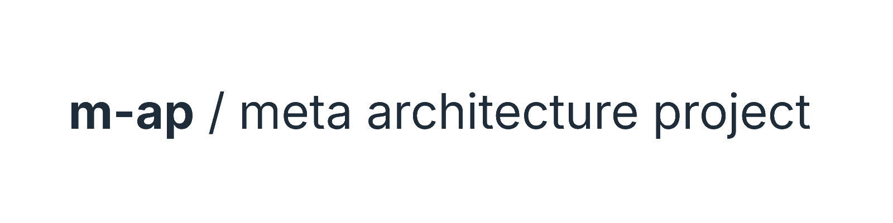
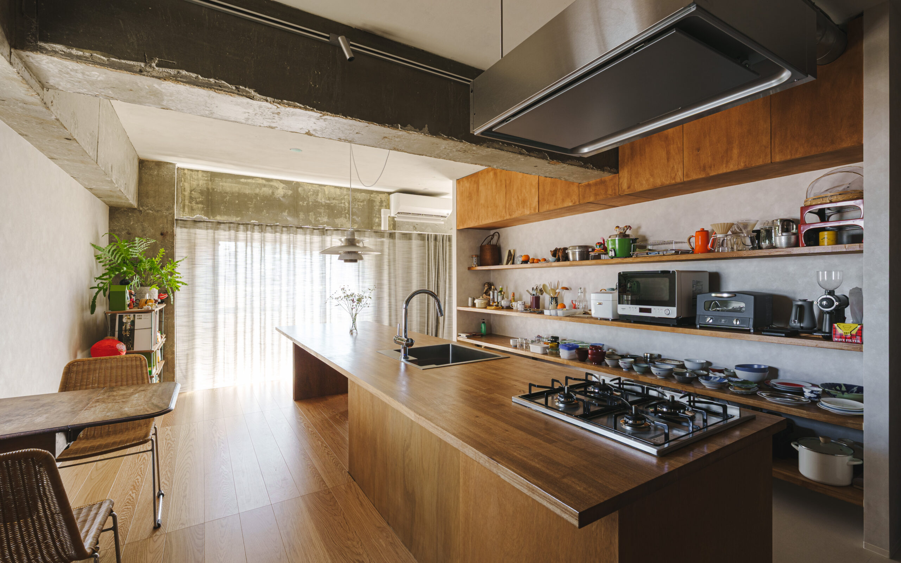
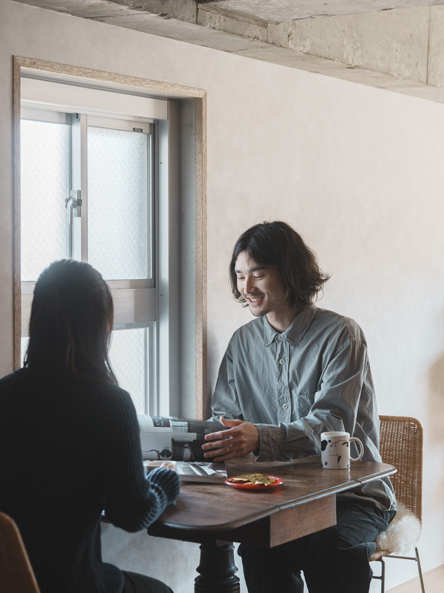
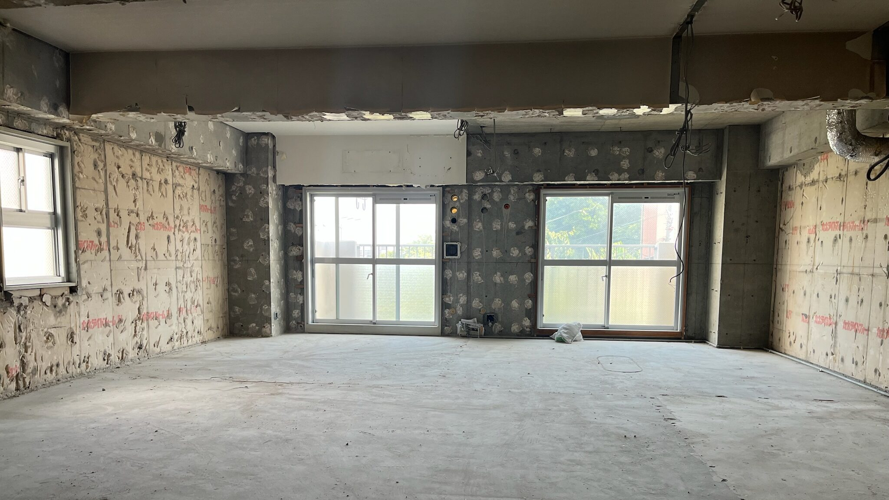
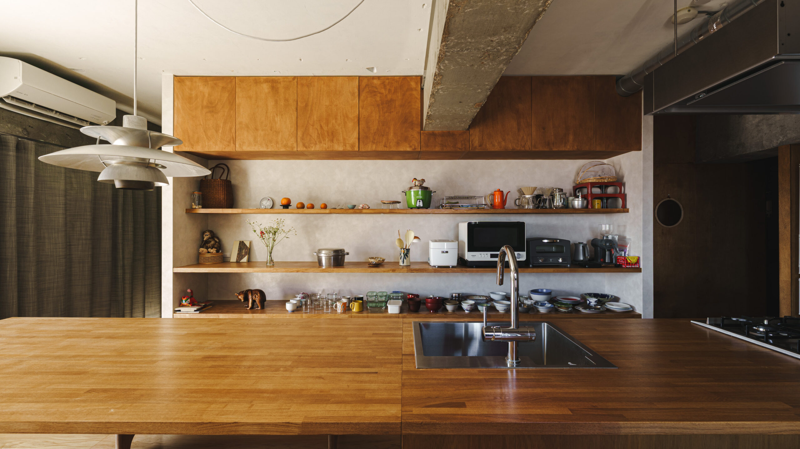
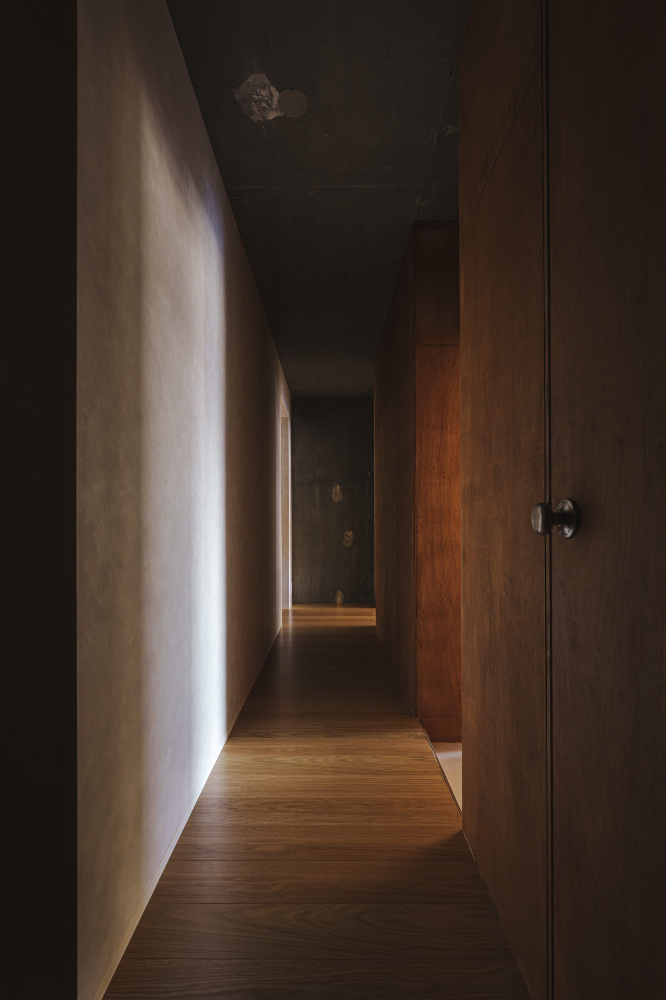
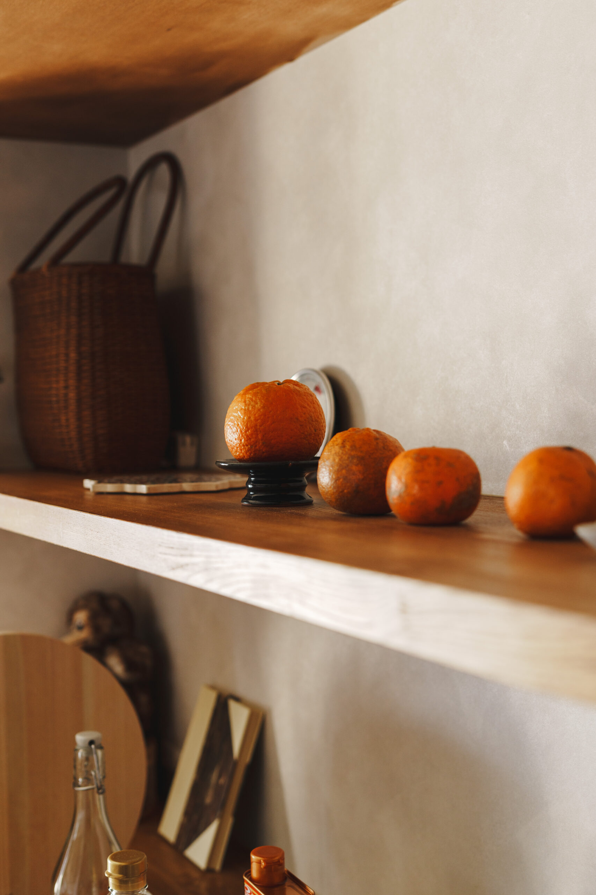
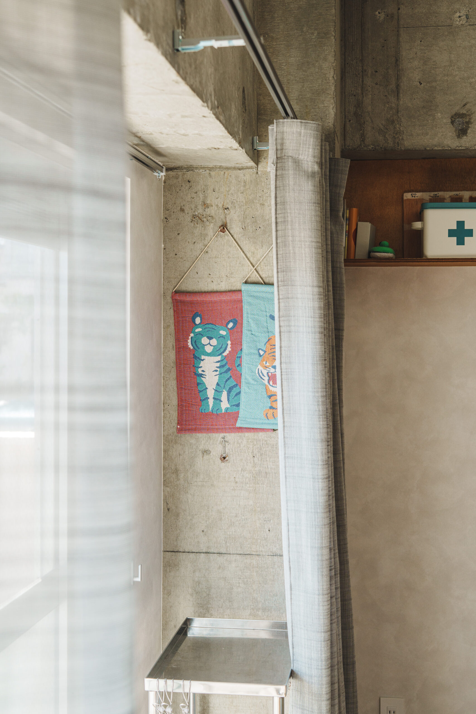
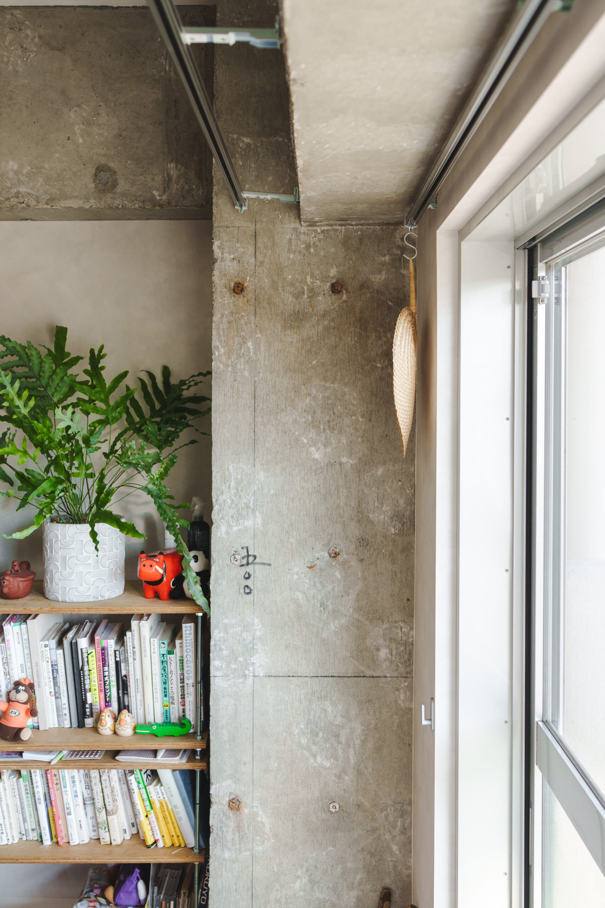

正本：https://m-ap.net/ ／ 方針：現行ベースのチューニング（未公開）
m-ap
Slackで進めていた左右比較（左＝現サイト／右＝更新案）を、ブラウザで見られる形に再構成しました。 灰＝維持、青＝追加・見せ方、橙＝文言・事実の変更。本番反映は別承認です。
写真はすべて現行HOME（https://m-ap.net/）から採取。ヒーロー骨格は維持し、立ち位置の短い説明と自邸リンク文言だけを調整。

相談・料金・自邸・実績・ABOUT・FAQ・初回相談
好きの「かたち」が見えてくる
中古マンション購入・リノベーションの相談







相談・料金・自邸・実績・ABOUT・FAQ・初回相談（維持）
好きの「かたち」が見えてくる
中古マンション購入・リノベーションの相談（維持）
m-apは、建築の視点から場所や暮らしの課題を考えます。住まいの購入・リノベーションは、その取り組みのひとつです。
既存URLとナビ順は維持。色付きページだけ調整。
トップ /
ヘッダーから7ページへ
相談できること /services/
住宅の段階別案内／末尾に住宅以外も一文
料金と進め方 /fees/
維持
自邸の記録 /our-home/
維持
プロジェクト /works-page/
自邸＋前職・協働
m-apについて /about/
住宅相談中心の紹介
FAQ /faq/ ・ 初回相談 /contact/
維持
トップ /
全体像の短い説明＋自邸リンク文言を調整
相談できること /services/
住宅以外の相談を独立項目に
料金と進め方 /fees/
維持
自邸の記録 /our-home/
維持
プロジェクト /works-page/
自邸の竣工年月を統一（2025年11月竣工）
m-apについて /about/
冒頭に建築的な課題解決という全体像
FAQ /faq/ ・ 初回相談 /contact/
維持
ABOUT・services・実績の必要箇所だけを対照。
物件・お金・設計を、ひとつの住まいとして考える。
自邸経験・資格・5つの大切にすること。
探す前 → 買う前 → 設計 → 工事
末尾：住宅以外のご相談も、初回に対応できる範囲を確認します。
東京・町田 自邸リノベーション／住宅・約70㎡／2024
建築の視点から、場所とその使い方を考える。
m-apは、人の思いや場所の条件を読み解き、課題を整理して、具体的なかたちにつなげます。住まい、働く場所、既存建物の活用など、何をつくるかが決まる前から一緒に考えます。
住まい以外のことも。
オフィスや店舗の改修、既存建物の活用などもご相談ください。実現したいことや、今困っていることから、対応できる範囲を一緒に整理します。
東京・町田 自邸リノベーション／住宅・約70㎡／2025年11月竣工
draw.io（Slack回収版・3ページ）： m-ap_current-vs-update.drawio
Canva（左右比較カンプ）： https://canva.link/xghwlik5tai29xy
Canva（初回たたき台）： https://canva.link/vs370v2cdlav9cv
Slackスレッド： #m-ap（2026-10-10「いまのホームページをベースにチューニング」）
Notion： WF・デザインカンプたたき台